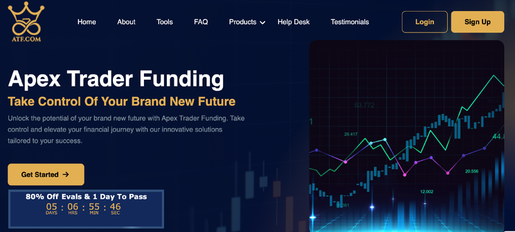
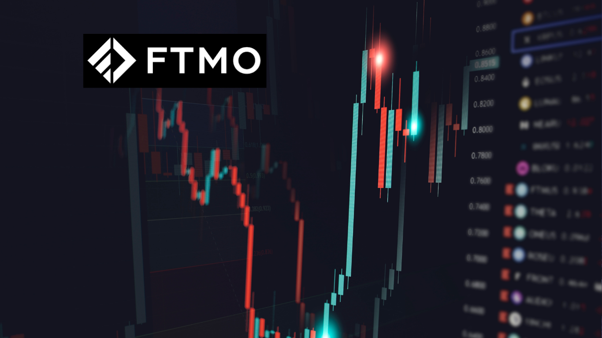

4 Meilleurs Prop Firms | Comparatif et avis 2024
Dans ce domaine ultra-compétitifs comme le forex et le day trading, le moindre avantage fait une énorme différence dans votre réussite ou non dans votre
manière de trader.
Choisir la meilleure prop firm, également connue sous le nom de propfirm et de comptes de trading financés, peut être le tournant clé et l’avantage
recherché par tant de traders talentueux.
Pour vous, nous répertorions les meilleures prop firms pour les traders en France, Belgique, et Suisse afin que vous puissiez tirer parti de votre succès dans le
day trading / forex beaucoup plus rapidement !
Voici un comparatif des 5 meilleures prop firm en 2024, avec leurs avantages et inconvénients :
1. Raisemyfunds

Raise My Funds, c’est quoi ?
Raise My Funds est une prop firm lancée en 2024 par le broker RaiseFX. Cette société propose aux traders de les financer jusqu’à 1 million de dollars en
basant la croissance des comptes sur un plan de scaling.
Particularités de Raise My Funds
Avant d’être financé sur cette prop firm, vous devez réussir un challenge en deux étapes, avec un capital initial allant de 10 000$ à 200 000 $.
Une fois le challenge réussi, vous pouvez augmenter progressivement votre capital en atteignant des objectifs de performance définis. Par exemple,
après avoir réalisé un profit de 10 % sur leur capital initial, vous pouvez demander une augmentation de votre capital, et ainsi de suite, jusqu’à un
maximum de 1 million de dollars.
Ce que vous devez savoir sur Raise My Funds :
- Frais Remboursables : Les frais d’inscription sont remboursables lors du premier “Scale-Up” ou du premier paiement de bénéfices.
- Aucun Frais Cachés : Raise My Funds ne facture pas de frais supplémentaires ou cachés. Tous les frais sont inclus dans le Challenge.
- Levier : Le levier proposé est de 1:100 (x100) pour tous les challenges.
- Conditions de Trading : Toutes les étapes des challenges se déroulent sur un compte démo. Une fois le challenge réussi, le trader reçoit un compte réel
soumis.
Les actifs sur Raise My Funds ?
Raise My Funds permet de trader une large gamme d’actifs financiers, notamment :
- Forex (paires de devises majeures et mineures)
- Indices boursiers (S&P 500, Nasdaq, DAX, etc.)
- Matières premières (or, pétrole, gaz naturel, etc.)
- Actions (entreprises internationales)
- Cryptomonnaies (Bitcoin, Ethereum, etc.)
La plateforme donne accès à plus de 500 actifs différents pour diversifier vos investissements.
La seule exigence est que les stratégies employées restent éthiques et conformes aux conditions générales de Raise My Funds.
Plateforme de Trading
Pour exécuter les ordres, Raise My Funds utilise la populaire plateforme MetaTrader 5 (MT5), pour laquelle la société dispose d’une licence officielle. Les
traders peuvent donc accéder à MT5 sur desktop ou mobile.
2. Apex Trader Funding (ATF) : Une Prop Firm Fiable et Légitime ? Évaluation et Review :

Est-ce en accord avec vos objectifs ?
ATF permet aux traders de définir des objectifs de profit et offre un chemin clair pour développer les comptes, ce qui s’aligne bien avec la définition des objectifs de trading. Note :
5/5
Recherchez la Firme Propriétaire
ATF jouit d’une bonne réputation et propose une approche unique pour financer les traders, ce qui est bien accueilli dans la communauté de trading. Note :
5/5
Évaluez le Capital et l’Effet de Levier d’Apex Trader Funding
ATF fournit un capital et un effet de levier suffisants pour soutenir les stratégies des traders, garantissant qu’ils disposent des ressources nécessaires pour le
trading. Note : 5/5
Examinez les Politiques de Gestion des Risques
ATF met l’accent sur des pratiques de gestion des risques robustes, y compris des limites de tirage et des contrôles des risques, pour protéger à la fois les
traders et l’entreprise contre des pertes excessives. Note : 5/5
Vérifiez les Plateformes et Outils de Trading
ATF offre l’accès à des plateformes de trading diurnes populaires avec des outils essentiels pour l’exploitation, améliorant l’expérience de trading des traders.
Note : 5/5
Considérez la Structure des Coûts de la Firme Propriétaire d’Apex
ATF propose une structure de coûts claire et simplifiée, garantissant la transparence et des coûts équitables pour les traders. Note : 5/5
Évaluez la Formation et le Soutien
ATF propose des programmes de formation complets, du mentorat et un soutien continu, fournissant des ressources précieuses pour permettre aux traders
d’améliorer leurs compétences. Note : 5/5
3. FundedNext
Avantages:
- Compte de trading financé jusqu’à 100 000 $
- Frais de commission bas
- Programme de mentorat disponible
Inconvénients:
- Processus de sélection en deux étapes
- Exigences de performance modérées
- Limite de retrait mensuel
4. FTMO

Dans le monde du trading, les propfirms sont des entreprises qui mettent des capitaux à disposition des traders afin qu’ils puissent trader sur les marchés
financiers sans risquer leur propre argent. Parmi les nombreuses propfirms qui existent, FTMO se distingue comme l’une des plus populaires et respectées.
Dans cet article, nous allons examiner en détail la propfirm FTMO, ses avantages, ses inconvénients, et ce que vous devez savoir avant de vous lancer.
Qu’est-ce que FTMO ?
FTMO est une propfirm basée en République tchèque, fondée en 2015. Elle propose aux traders de les financer après avoir passé un processus d’évaluation
rigoureux appelé un challenge propfirm FTMO. Ce challenge permet à FTMO de sélectionner des traders compétents et disciplinés, prêts à gérer des
fonds importants.
Le Processus de Sélection : Challenge FTMO
Le processus de sélection de la propfirm FTMO est divisé en deux étapes principales :
- Challenge FTMO :Objectif de Profit : Les traders doivent atteindre un certain objectif de profit en 30 jours de trading. Par exemple, pour un compte de
100,000$, l’objectif est souvent de 10 %.Limites de Perte : Il y a des limites strictes de pertes journalières et de pertes globales que le trader ne doit pas
dépasser. - Vérification :Objectif de Profit : Plus bas que dans le Challenge, souvent autour de 5 % en 60 jours de trading.Limites de Perte : Similaires à celles du
Challenge FTMO.
Si le trader réussit ces deux étapes, il est alors financé par la propfirm FTMO et peut commencer à trader avec un compte financé.
Avantages de FTMO
- Aucun Risque pour le Trader : L’un des plus grands avantages est que les traders n’ont pas besoin de risquer leur propre argent. La propfirm FTMO
fournit les fonds nécessaires, ce qui réduit considérablement le stress et la pression psychologique. - Partage des Profits Équitable : FTMO propose un partage des profits attractif. Les traders peuvent conserver jusqu’à 90 % des profits générés, ce qui
est extrêmement compétitif par rapport à d’autres propfirms. - Support et Formation : La propfirm FTMO offre un excellent support client et de nombreuses ressources éducatives pour aider les traders à réussir.
Cela inclut des webinaires, des vidéos de formation et des articles sur diverses stratégies de trading. - Flexibilité : Les traders peuvent choisir parmi différents types de comptes et montants de financement, ce qui leur permet de s’adapter à leurs propres
styles et préférences de trading.
Inconvénients de FTMO
- Frais d’Inscription : Participer au challenge, la propfirm FTMO nécessite de payer des frais d’inscription, qui peuvent être considérés comme un
investissement initial. Cependant, ces frais sont remboursés si le trader réussit le Challenge et la Vérification. - Rigueur du Processus de Sélection : Le processus de sélection est rigoureux et exigeant. Seuls les traders disciplinés et compétents peuvent espérer
réussir. Les objectifs de profit et les limites de perte peuvent être difficiles à atteindre, surtout pour les traders novices. - Règles Strictes : FTMO impose des règles strictes concernant la gestion des risques. Par exemple, les traders doivent respecter des limites de perte
journalières et globales. Le non-respect de ces règles peut entraîner la disqualification.
Comment choisir la meilleure prop firm pour le trading ?
Pour faire le bon choix lors de la sélection de la Prop Firm, vous devez :
- Tout d’abord, définir vos objectifs ;
- Analyser le capital de trading et l’effet de levier offerts ;
- Vérifier les plateformes et les outils disponibles ;
- Assurer la conformité aux lois et réglementations ;
- Vérifier si l’environnement est propice et favorable au trading.